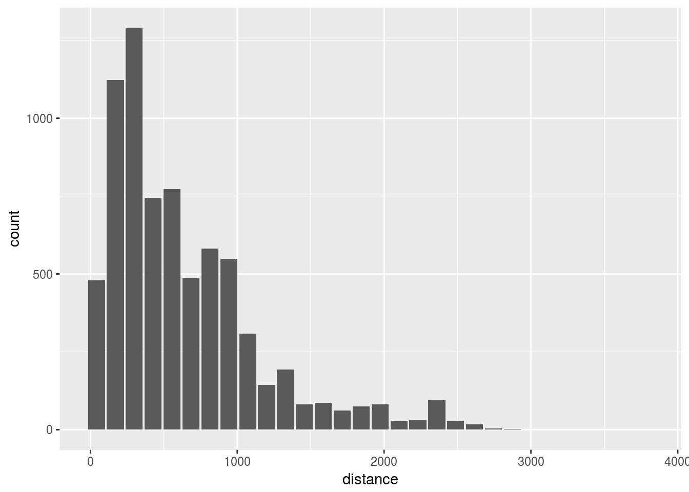
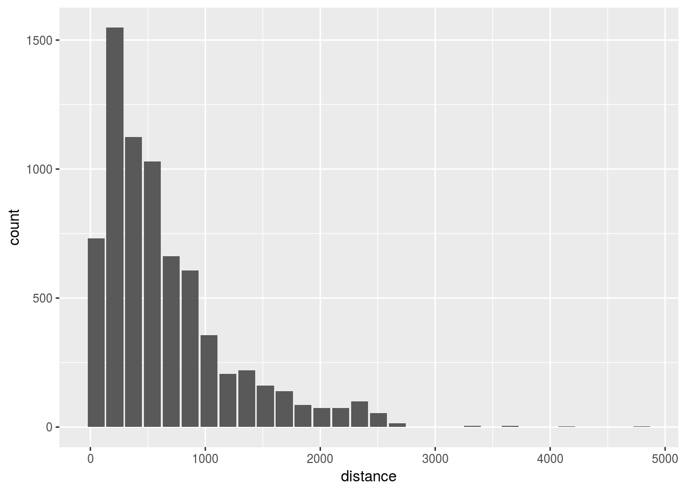

5 Modeling
5.1 SQL Native sampling
Use PostgreSQL TABLESAMPLE clause
- Use
build_sql()andremote_query()to combine a thedplyrcommand with a custom SQL statement
sample_table<- dbGetQuery(con, build_sql(remote_query(flights), " TABLESAMPLE SYSTEM (0.1)"))- Preview the sample data
View(sample_table, 1000)- Test the efficacy of the sampling with a plot
dbplot_histogram(sample_table, distance)
5.2 Sample manually
Use row_number(), sample() and map_df() to create a sample data set
- Create a filtered dataset for with 1 month of data
db_month <- flights %>%
filter(month == 1)- Get the row count
rows <- as.integer(pull(tally(db_month)))- Use
row_number()to create a new column to number each row
db_month <- db_month %>%
mutate(row = row_number()) - Create a random set of 600 numbers, limited by the number of rows
sampling <- sample(1:rows, 600)- Use
%in%to filter the matched sample row IDs with the random set
db_month <- db_month %>%
filter(row %in% sampling)- Verify number of rows
tally(db_month)## # Source: lazy query [?? x 1]
## # Database: postgres [rstudio_dev@localhost:/postgres]
## n
## <S3: integer64>
## 1 600- Create a function with the previous steps, but replacing the month number with an argument. Collect the data at the end
sample_segment <- function(x, size = 600) {
db_month <- flights %>%
filter(month == x)
rows <- as.integer(pull(tally(db_month)))
db_month <- db_month %>%
mutate(row = row_number())
sampling <- sample(1:rows, size)
db_month %>%
filter(row %in% sampling) %>%
collect()
}- Test the function
head(sample_segment(3), 100)## # A tibble: 100 x 31
## year month dayofmonth dayofweek deptime crsdeptime arrtime crsarrtime
## <dbl> <dbl> <dbl> <dbl> <dbl> <dbl> <dbl> <dbl>
## 1 2008 3.00 3.00 1.00 1334 1325 1409 1410
## 2 2008 3.00 3.00 1.00 1151 1150 1237 1300
## 3 2008 3.00 3.00 1.00 1646 1645 1807 1825
## 4 2008 3.00 3.00 1.00 852 855 1004 1010
## 5 2008 3.00 4.00 2.00 1010 1000 1158 1155
## 6 2008 3.00 4.00 2.00 1402 1400 1642 1655
## 7 2008 3.00 4.00 2.00 1807 1805 1959 2005
## 8 2008 3.00 4.00 2.00 2129 2135 39.0 55.0
## 9 2008 3.00 4.00 2.00 1306 1305 1358 1410
## 10 2008 3.00 4.00 2.00 1913 1850 2026 2015
## # ... with 90 more rows, and 23 more variables: uniquecarrier <chr>,
## # flightnum <dbl>, tailnum <chr>, actualelapsedtime <dbl>,
## # crselapsedtime <dbl>, airtime <dbl>, arrdelay <dbl>, depdelay <dbl>,
## # origin <chr>, dest <chr>, distance <dbl>, taxiin <dbl>, taxiout <dbl>,
## # cancelled <dbl>, cancellationcode <chr>, diverted <dbl>,
## # carrierdelay <dbl>, weatherdelay <dbl>, nasdelay <dbl>,
## # securitydelay <dbl>, lateaircraftdelay <dbl>, flightid <int>, row <S3:
## # integer64>- Use
map_df()to run the function for each month
new_sample <- 1:12 %>%
map_df(~sample_segment(.x))- Verify sample with a histogram
dbplot_histogram(new_sample, distance)
5.3 Create a model & test
- Prepare a model data set
model_data <- new_sample %>%
mutate(
season = case_when(
month >= 3 & month <= 5 ~ "Spring",
month >= 6 & month <= 8 ~ "Summmer",
month >= 9 & month <= 11 ~ "Fall",
month == 12 | month <= 2 ~ "Winter"
)
) %>%
select(arrdelay, season, depdelay) - Create a simple
lm()model
model_lm <- lm(arrdelay ~ . , data = model_data)
summary(model_lm)##
## Call:
## lm(formula = arrdelay ~ ., data = model_data)
##
## Residuals:
## Min 1Q Median 3Q Max
## -200.294 -7.384 -1.186 5.175 183.902
##
## Coefficients:
## Estimate Std. Error t value Pr(>|t|)
## (Intercept) -3.111415 0.337908 -9.208 < 2e-16 ***
## seasonSpring 1.577236 0.477733 3.301 0.000966 ***
## seasonSummmer 1.286903 0.478356 2.690 0.007156 **
## seasonWinter 1.794533 0.479908 3.739 0.000186 ***
## depdelay 1.010592 0.004575 220.905 < 2e-16 ***
## ---
## Signif. codes: 0 '***' 0.001 '**' 0.01 '*' 0.05 '.' 0.1 ' ' 1
##
## Residual standard error: 14.31 on 7195 degrees of freedom
## Multiple R-squared: 0.8733, Adjusted R-squared: 0.8732
## F-statistic: 1.24e+04 on 4 and 7195 DF, p-value: < 2.2e-16- Create a test data set by combining the sampling and model data set routines
test_sample <- 1:12 %>%
map_df(~sample_segment(.x, 100)) %>%
mutate(
season = case_when(
month >= 3 & month <= 5 ~ "Spring",
month >= 6 & month <= 8 ~ "Summmer",
month >= 9 & month <= 11 ~ "Fall",
month == 12 | month <= 2 ~ "Winter"
)
) %>%
select(arrdelay, season, depdelay) - Run a simple routine to check accuracy
test_sample %>%
mutate(p = predict(model_lm, test_sample),
over = abs(p - arrdelay) < 10) %>%
group_by(over) %>%
tally() %>%
mutate(percent = round(n / sum(n), 2))## # A tibble: 2 x 3
## over n percent
## <lgl> <int> <dbl>
## 1 F 384 0.320
## 2 T 816 0.6805.4 Score inside database
Learn about tidypredict to run predictions inside the database
- Load the library, and see the results of passing the model as an argument to
tidypredict_fit()
library(tidypredict)
tidypredict_fit(model_lm)## ((((-3.11141538856176) + ((ifelse((season) == ("Spring"), 1,
## 0)) * (1.57723632575646))) + ((ifelse((season) == ("Summmer"),
## 1, 0)) * (1.28690319865656))) + ((ifelse((season) == ("Winter"),
## 1, 0)) * (1.7945327269226))) + ((depdelay) * (1.01059165310291))- Use
tidypredict_sql()to see the resulting SQL statement
tidypredict_sql(model_lm, con)## <SQL> ((((-3.11141538856176) + ((CASE WHEN (("season") = ('Spring')) THEN (1.0) WHEN NOT(("season") = ('Spring')) THEN (0.0) END) * (1.57723632575646))) + ((CASE WHEN (("season") = ('Summmer')) THEN (1.0) WHEN NOT(("season") = ('Summmer')) THEN (0.0) END) * (1.28690319865656))) + ((CASE WHEN (("season") = ('Winter')) THEN (1.0) WHEN NOT(("season") = ('Winter')) THEN (0.0) END) * (1.7945327269226))) + (("depdelay") * (1.01059165310291))- Run the prediction inside
dplyr
flights %>%
filter(month == 2,
dayofmonth == 1) %>%
mutate(
season = case_when(
month >= 3 & month <= 5 ~ "Spring",
month >= 6 & month <= 8 ~ "Summmer",
month >= 9 & month <= 11 ~ "Fall",
month == 12 | month <= 2 ~ "Winter"
)
) %>%
select( season, depdelay) %>%
tidypredict_to_column(model_lm) %>%
head()## # Source: lazy query [?? x 3]
## # Database: postgres [rstudio_dev@localhost:/postgres]
## season depdelay fit
## <chr> <dbl> <dbl>
## 1 Winter 19.0 17.9
## 2 Winter 0 - 1.32
## 3 Winter - 5.00 - 6.37
## 4 Winter - 9.00 -10.4
## 5 Winter - 6.00 - 7.38
## 6 Winter 50.0 49.2- View the SQL behind the
dplyrcommand
flights %>%
filter(month == 2,
dayofmonth == 1) %>%
mutate(
season = case_when(
month >= 3 & month <= 5 ~ "Spring",
month >= 6 & month <= 8 ~ "Summmer",
month >= 9 & month <= 11 ~ "Fall",
month == 12 | month <= 2 ~ "Winter"
)
) %>%
select( season, depdelay) %>%
tidypredict_to_column(model_lm) %>%
remote_query()## <SQL> SELECT "season", "depdelay", ((((-3.11141538856176) + ((CASE WHEN (("season") = ('Spring')) THEN (1.0) WHEN NOT(("season") = ('Spring')) THEN (0.0) END) * (1.57723632575646))) + ((CASE WHEN (("season") = ('Summmer')) THEN (1.0) WHEN NOT(("season") = ('Summmer')) THEN (0.0) END) * (1.28690319865656))) + ((CASE WHEN (("season") = ('Winter')) THEN (1.0) WHEN NOT(("season") = ('Winter')) THEN (0.0) END) * (1.7945327269226))) + (("depdelay") * (1.01059165310291)) AS "fit"
## FROM (SELECT "season", "depdelay"
## FROM (SELECT "year", "month", "dayofmonth", "dayofweek", "deptime", "crsdeptime", "arrtime", "crsarrtime", "uniquecarrier", "flightnum", "tailnum", "actualelapsedtime", "crselapsedtime", "airtime", "arrdelay", "depdelay", "origin", "dest", "distance", "taxiin", "taxiout", "cancelled", "cancellationcode", "diverted", "carrierdelay", "weatherdelay", "nasdelay", "securitydelay", "lateaircraftdelay", "flightid", CASE
## WHEN ("month" >= 3.0 AND "month" <= 5.0) THEN ('Spring')
## WHEN ("month" >= 6.0 AND "month" <= 8.0) THEN ('Summmer')
## WHEN ("month" >= 9.0 AND "month" <= 11.0) THEN ('Fall')
## WHEN ("month" = 12.0 OR "month" <= 2.0) THEN ('Winter')
## END AS "season"
## FROM (SELECT *
## FROM datawarehouse.flight
## WHERE (("month" = 2.0) AND ("dayofmonth" = 1.0))) "nhuyjegkot") "pioouutnyy") "gumgipifhn"- Compare predictions to ensure results are within range
test <- tidypredict_test(model_lm)
test## tidypredict test results
## Difference threshold: 1e-12
##
## Fitted records above the threshold: 10
##
## Fit max difference:
## Lower max difference:
## Upper max difference:3.29691829392686e-12- View the records that exceeded the threshold
test$raw_results %>%
filter(fit_threshold)## rowid fit fit_te fit_diff fit_threshold
## 1 1085 941.5651 941.5651 3.296918e-12 TRUE
## 2 2198 416.8508 416.8508 1.477929e-12 TRUE
## 3 3418 917.8139 917.8139 3.296918e-12 TRUE
## 4 3895 317.5225 317.5225 1.080025e-12 TRUE
## 5 3919 383.2109 383.2109 1.307399e-12 TRUE
## 6 3990 288.2153 288.2153 1.023182e-12 TRUE
## 7 5757 324.3203 324.3203 1.136868e-12 TRUE
## 8 6676 312.9771 312.9771 1.080025e-12 TRUE
## 9 7014 597.9640 597.9640 2.160050e-12 TRUE
## 10 7019 281.6488 281.6488 1.023182e-12 TRUE5.5 Parsed model
Quick review of the model parser
- Use the
parse_model()function to see howtidypredictinterprets the model
pm <- parse_model(model_lm)
pm## # A tibble: 10 x 11
## labels estimate type field_1 field_2 qr_1 qr_2 qr_3
## <chr> <dbl> <chr> <chr> <chr> <dbl> <dbl> <dbl>
## 1 (Intercep… - 3.11 term <NA> <NA> - 0.0118 - 0.00680 - 0.00962
## 2 seasonSpr… 1.58 term <NA> Spring 0 0.0272 0.00962
## 3 seasonSum… 1.29 term <NA> Summmer 0 0 0.0289
## 4 seasonWin… 1.79 term <NA> Winter 0 0 0
## 5 depdelay 1.01 term {{:}} <NA> 0 0 0
## 6 labels 0 varia… depdel… season NA NA NA
## 7 model NA varia… <NA> <NA> NA NA NA
## 8 version NA varia… <NA> <NA> NA NA NA
## 9 residual NA varia… <NA> <NA> NA NA NA
## 10 sigma2 NA varia… <NA> <NA> NA NA NA
## # ... with 3 more variables: qr_4 <dbl>, qr_5 <dbl>, vals <chr>- Verify that the resulting table can be used to get the fit formula
tidypredict_fit(pm)## ((((-3.11141538856176) + ((ifelse((season) == ("Spring"), 1,
## 0)) * (1.57723632575646))) + ((ifelse((season) == ("Summmer"),
## 1, 0)) * (1.28690319865656))) + ((ifelse((season) == ("Winter"),
## 1, 0)) * (1.7945327269226))) + ((depdelay) * (1.01059165310291))- Save the parsed model for later use
library(readr)
write_csv(pm, "parsedmodel.csv")